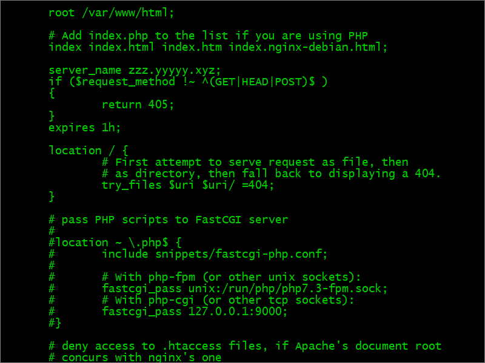
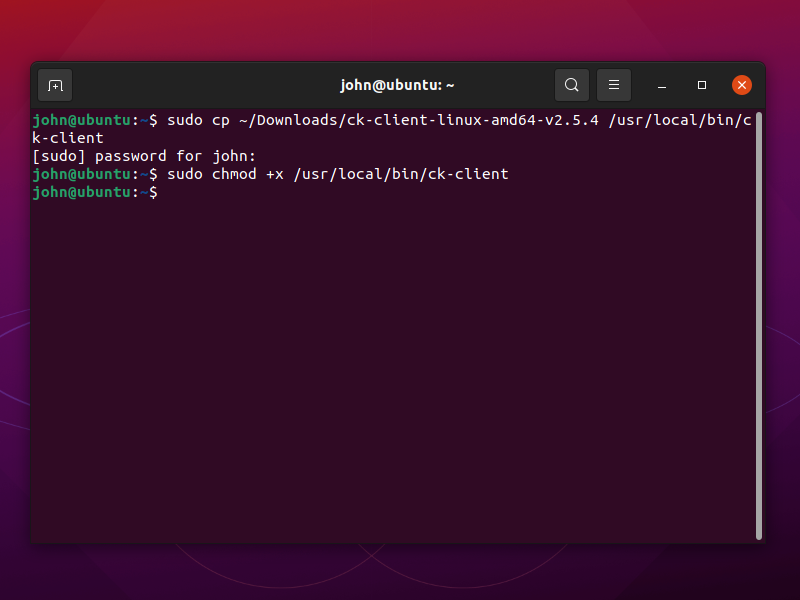
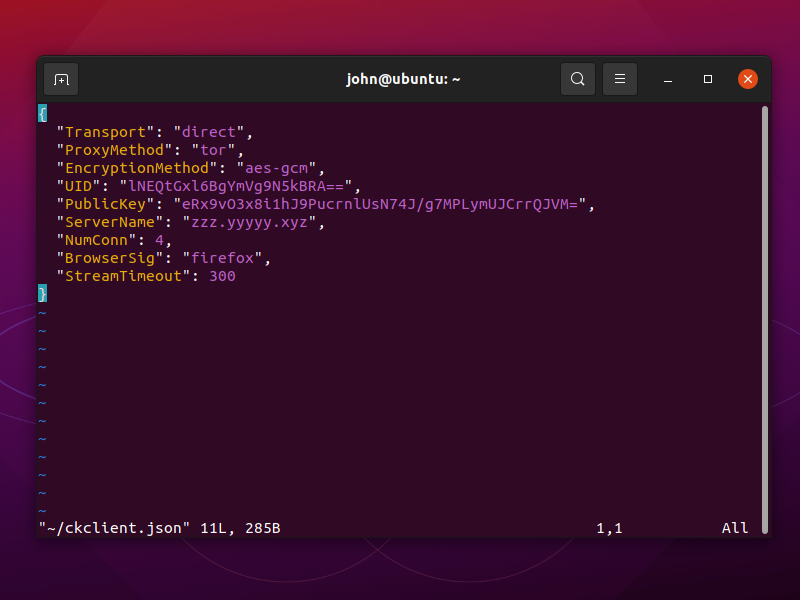
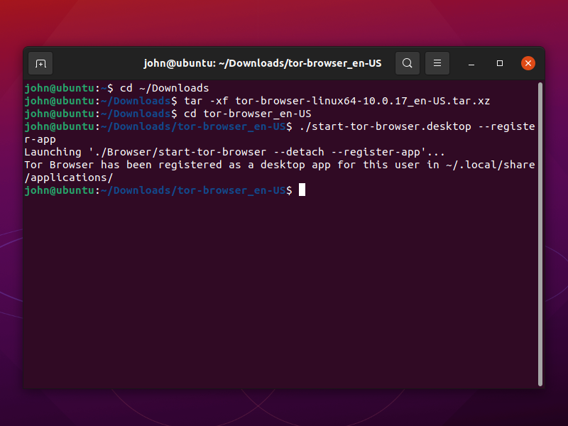
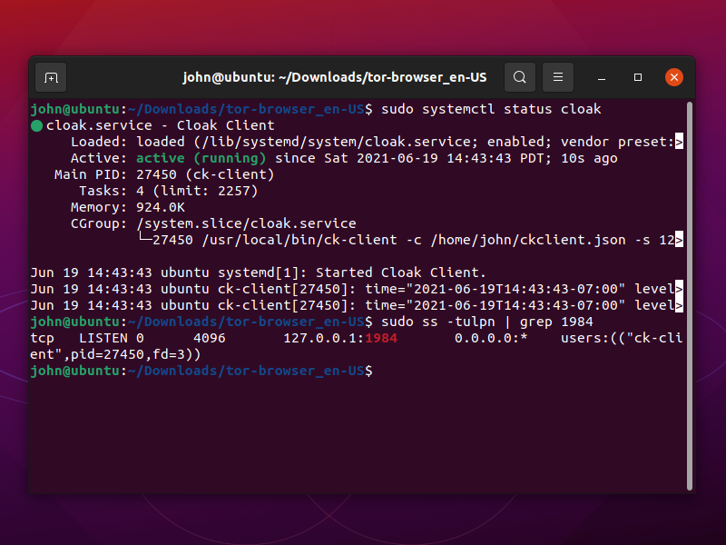
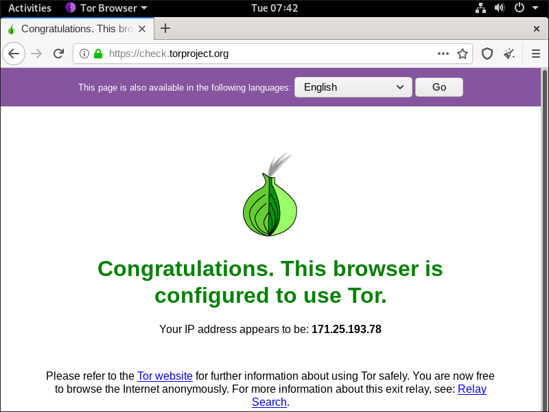

Tor + Cloak
In this arrangement we use Cloak to build a disguised private Tor bridge. This is an alternative to building an obfs4 private bridge. It hides the fact that you are using Tor and protects you from malicious guard nodes.
We give instructions for a Debian 10 server, with a camouflage website running on Nginx. The process will be similar for an Ubuntu server. Before you set up your server:
- You will need a domain name, either free or paid
- You will need to create a DNS
Arecord pointing from your server hostname to your server’s IP address
In the examples in this article, we give the server host name as zzz.yyyyy.xyz and the server IP address as zz.zz.zz.zz.
We end the tutorial by describing the procedure for setting up a Ubuntu 21.04 client. If your server or client runs a recent version of Debian, the procedures will be very similar to those for Ubuntu 21.04. If your PC runs Windows or macOS, you will need to experiment on your own.
1. Set Up Camouflage Web Server
1.1. Open Firewall
Firewalls may be implemented with nftables, iptables, ufw, firewalld, or Cloud security groups. Whichever one
you are using, you will need to open ports 80 and 443 for TCP input and persist your changes across reboots.
For example, if you are using nftables with a policy of drop on Debian 10, the commands would be:
nft add rule inet filter input tcp dport { http, https } counter accept
nft list ruleset > /etc/nftables.conf
If you are not using nftables, then make the equivalent changes for your firewall.
1.2. Implement BBR
Bottleneck Bandwidth and Round-trip propagation time (BBR) is a TCP congestion control algorithm developed at Google. Under certain types of network congestion, it will improve your latency. Implement BBR TCP congestion control on your server with the following commands:
cat >> /etc/sysctl.d/50-bbr.conf <<EOF
net.core.default_qdisc=fq
net.ipv4.tcp_congestion_control=bbr
EOF
sysctl -p /etc/sysctl.d/50-bbr.conf
1.3. Install Nginx
Install the Nginx web server on your server:
apt update && apt upgrade -y
apt install nginx -y
1.4. Configure Nginx
We want to make the Nginx web site look as much as possible like a realistic production server. Therefore edit the main Nginx configuration file:
vi /etc/nginx/nginx.conf
Uncomment the line:
server_tokens off;
Save the main Nginx configuration file. Then edit the default site definition file:
vi /etc/nginx/sites-available/default
Insert the real server name, which in our example is zzz.yyyyy.xyz:
server_name zzz.yyyyy.xyz;
Immediately below that, insert lines that will allow only expected HTTP request methods:
if ($request_method !~ ^(GET|HEAD|POST)$ )
{
return 405;
}
Just like a real web server, also add a line to provide some realistic browser caching:
expires 1h;

Save the default site definition file. Restart Nginx for all your changes:
nginx -t
systemctl restart nginx
1.5. Add Camouflage Content to Web Server
Add a few realistic webpages to your camouflage site. Here is an example of how you might do that. You can add different content if you have some.
apt install wget zip unzip -y
wget https://github.com/arcdetri/sample-blog/archive/master.zip
unzip master.zip
cp -rf sample-blog-master/html/* /var/www/html/
At this point, you can test to see if your host name resolves to your IP address by opening a browser on your PC and visiting the HTTP version of your site. Using
our example of a host named zzz.yyyyy.xyz, that would be:
http://zzz.yyyyy.xyz
1.6. Add SSL Certificate to Web Server
Now we make the site accessible by HTTPS on port 443, following the instructions for Nginx and Debian 10 on the Certbot website.
apt install certbot python-certbot-nginx -y
certbot --nginx
certbot renew --dry-run
You now have a working HTTPS camouflage website with a few sample pages on it. Test this by opening a browser on your PC and visiting the HTTPS version of your site. In our example, that would be:
https://zzz.yyyyy.xyz
2. Install Tor on Server
2.1. Install Tor
Install the prerequisite package:
apt install apt-transport-https -y
Add the Tor repositories to your Advanced Packaging Tool (APT) sources list:
vi /etc/apt/sources.list
Add lines at the bottom for the Tor project repositories for Debian buster:
deb https://deb.torproject.org/torproject.org buster main
deb-src https://deb.torproject.org/torproject.org buster main
Save the file.
Add the GNU Privacy Guard (GPG) key used to sign the Tor packages.
apt install gpg -y
wget -qO- https://deb.torproject.org/torproject.org/A3C4F0F979CAA22CDBA8F512EE8CBC9E886DDD89.asc | gpg --import
gpg --export A3C4F0F979CAA22CDBA8F512EE8CBC9E886DDD89 | apt-key add -
Update your package lists:
apt update
Install Tor and the Tor Debian keyring from the Tor project repository:
apt install tor deb.torproject.org-keyring -y
2.2. Configure Tor
Edit the Tor configuration file:
vi /etc/tor/torrc
Delete the existing lines. Use the template below as a model for your configuration file. At a minimum, replace the Nickname with your own choice of
nickname. Notice that we did not open port 9001 in the firewall. Also notice the line PublishServerDescriptor 0. Both of these measures help
to keep the bridge hidden.
Log notice file /var/log/tor/log
ORPort 9001
AssumeReachable 1
SocksPort 0
ORPort auto
BridgeRelay 1
Exitpolicy reject *:*
PublishServerDescriptor 0
Nickname yourchoiceofnick
Save the file.
2.3. Restart Tor
Restart Tor with your revised configuration file:
systemctl restart tor
Check the results:
tail /var/log/tor/log
After a minute or so, you should see Bootstrapped 100% (done): Done.
3. Install Cloak on Server
3.1. Move HTTPS Site to Port 8443
Right now, Nginx is listening on ports 80 and 443. We’re going to make Cloak listen on port 443, so we’ll move Nginx and make it listen on port 8443 instead.
Edit the Nginx default site definition file:
vi /etc/nginx/sites-available/default
Change the lines that make the SSL server listen on port 443 to make it listen on port 8443:
listen [::]:8443 ssl ipv6only=on; # managed by Certbot
listen 8443 ssl; # managed by Certbot
Save the default site definition file. Restart Nginx to make this change take effect:
systemctl restart nginx
3.2. Download Cloak
Open a browser on your PC and visit the GitHub Cloak releases page. Determine the version
number of the latest release. For example, right now it is 2.5.4.
On your server, download the latest binary for 64-bit Linux:
wget https://github.com/cbeuw/Cloak/releases/download/v2.5.4/ck-server-linux-amd64-v2.5.4
Copy the binary into a directory in your path with the name ck-server:
cp ck-server-linux-amd64-v2.5.4 /usr/local/bin/ck-server
Make ck-server executable:
chmod +x /usr/local/bin/ck-server
Allow Cloak to bind to privileged ports (i.e. TCP/IP port numbers below 1024):
setcap CAP_NET_BIND_SERVICE=+eip /usr/local/bin/ck-server
3.3. Generate Public-Private Key Pair
Generate a public-private key pair:
ck-server -k
The public key and private key are delivered, separated by a comma. Here is an example of what the result might look like:
eRx9vO3x8i1hJ9PucrnlUsN74J/g7MPLymUJCrrQJVM=,MF2tHiGXjP3P3fIIxjt02un2G0qtXdbArmrWsTfz7FM=
- The base-64 string before the comma is the public key, to be given to users
- The base-64 string after the comma is the private key, to be kept on the server
3.4. Generate Administrator Id
Generate a secret identifier for the administrator like this:
ck-server -u
It will produce a base-64 string that looks like this:
SI6bHNp9+Mlc0+/LxhhYig==
3.5. Generate User Id
Generate an identifier for an ordinary user. We will make this user have no bandwidth or credit limit restrictions.
ck-server -u
The command will produce a base-64 string that looks like this:
lNEQtGxl6BgYmVg9N5kBRA==
3.6. Configure Cloak
For your reference, there is a sample configuration file on GitHub.
Create a directory for Cloak:
mkdir /etc/cloak
Edit your server’s configuration file for Cloak:
vi /etc/cloak/ckserver.json
Insert contents like the example below, substituting in your user id, private key, and administrator id:
{
"ProxyBook": {
"tor": [
"tcp",
"127.0.0.1:9001"
]
},
"BindAddr": [
":443"
],
"BypassUID": [
"lNEQtGxl6BgYmVg9N5kBRA=="
],
"RedirAddr": "127.0.0.1:8443",
"PrivateKey": "MF2tHiGXjP3P3fIIxjt02un2G0qtXdbArmrWsTfz7FM=",
"AdminUID": "SI6bHNp9+Mlc0+/LxhhYig==",
"DatabasePath": "/etc/cloak/userinfo.db",
"StreamTimeout": 300
}
ProxyBooktells Cloak where to forward authenticated proxy traffic to, which for us is Tor on port9001BindAddris a list of addresses Cloak will bind and listen to, which for us is443BypassUIDis a list of UIDs that are authorised without any bandwidth or credit limit restrictionsRedirAddris the redirection address when the incoming traffic is not from an authenticated Cloak clientPrivateKeyis the static curve25519 Diffie-Hellman private key encoded in base-64AdminUIDis the user id of the admin user in base-64DatabasePathis the path touserinfo.db(ifuserinfo.dbdoesn’t exist in this directory, Cloak will create one automatically)StreamTimeoutis the number of seconds of no sent data after which the incoming Cloak client connection will be terminated
Save the Cloak server configuration file.
3.7. Configure Systemd for Cloak
Create a systemd service file, so that we can make Cloak start after every reboot and run continually as a service:
vi /usr/lib/systemd/system/cloak.service
Insert contents like this:
[Unit]
Description=Cloak Server
After=network.target
[Service]
Type=simple
ExecStart=/usr/local/bin/ck-server -c /etc/cloak/ckserver.json
Restart=on-failure
[Install]
WantedBy=multi-user.target
Save the file.
3.8. Run Cloak
Make Cloak start after every reboot and run continually as a service:
systemctl enable cloak
systemctl start cloak
Check the status of the Cloak service:
systemctl status cloak
The above command should show that Cloak is active (running).
ss -tulpn | grep 443
The above command should show that:
- Cloak (
ck-server) is listening on port 443 - Nginx is listening in port 8443
Your work on the server is done for now, so exit your SSH session with the server:
exit
3.9. Check from PC
From your PC, check what an unauthorized visitor to your server would see. In our example, the address to put into your browser would be:
https://zzz.yyyyy.xyz
You should see an ordinary looking website.
4. Set Up Debian/Ubuntu Client
Now work on your PC, which in this tutorial is running Ubuntu 21.04. The procedure for a Debian PC will be very similar.
4.1. Download Cloak Client
In Firefox, go to GitHub and determine the latest version of Cloak. We will use version
2.5.4 as our example.
Still in your browser, download ck-client-linux-amd64-v2.5.4 from GitHub to your PC’s Downloads directory.
Now switch to the terminal on your Debian/Ubuntu PC. Copy the binary into a directory that is in your path:
sudo cp ~/Downloads/ck-client-linux-amd64-v2.5.4 /usr/local/bin/ck-client
Make ck-client executable:
sudo chmod +x /usr/local/bin/ck-client

4.2. Configure Cloak Client
For your reference, there is a sample client configuration file on GitHub.
Edit your client’s configuration file for Cloak:
vi ~/ckclient.json
Insert contents like the example below, substituting in your user id, public key, and hostname:
{
"Transport": "direct",
"ProxyMethod": "tor",
"EncryptionMethod": "aes-gcm",
"UID": "lNEQtGxl6BgYmVg9N5kBRA==",
"PublicKey": "eRx9vO3x8i1hJ9PucrnlUsN74J/g7MPLymUJCrrQJVM=",
"ServerName": "zzz.yyyyy.xyz",
"NumConn": 4,
"BrowserSig": "firefox",
"StreamTimeout": 300
}
Transportcan be either direct or CDNProxyMethodis the name of the proxy method you are usingEncryptionMethodis the name of the encryption algorithm you want Cloak to use, over and above the encryption in the proxy method (to avoid fingerprinting of Tor, you must not leave this asplain)UIDis your user id in base-64PublicKeyis the static curve25519 public key, given by the server adminServerNameis the domain you want to make your ISP or firewall think you are visitingNumConnis the amount of underlying TCP connections you want to useBrowserSigis the browser you want to appear to be usingStreamTimeoutis the number of seconds of no sent data after which the incoming proxy connection will be terminated
Save the file.
4.3. Configure Systemd for Cloak
Create a systemd service file, so that we can make Cloak start after every reboot and run continually as a service:
sudo vi /usr/lib/systemd/system/cloak.service
Insert contents like this.
- Replace
yournameby your actual user name on the PC. - Replace
zz.zz.zz.zzby your actual server IP address.
[Unit]
Description=Cloak Client
After=network.target
[Service]
Type=simple
ExecStart=/usr/local/bin/ck-client -c /home/yourname/ckclient.json -s zz.zz.zz.zz
Restart=on-failure
[Install]
WantedBy=multi-user.target
Save the file.
4.4. Download Tor Browser
Open Firefox. Download the 64-bit Linux version of Tor Browser in your language from Tor Project website. For example, for English this would be the file tor-browser-linux64-10.0.17_en-US.tar.xz.
Open a terminal, and decompress the archive like this:
cd ~/Downloads
tar -xf tor-browser-linux64-10.0.17_en-US.tar.xz
4.5. Install Tor Browser
Issue the commands:
cd tor-browser_en-US
./start-tor-browser.desktop --register-app

4.6. Run Cloak
Issue these commands in turn:
sudo systemctl enable cloak
sudo systemctl start cloak
Check that Cloak is active and listening on port 1984:
sudo systemctl status cloak
sudo ss -tulpn | grep 1984

4.7. Run Tor Browser
In GNOME desktop, open Activities, or press the “Super” key (looks like a Windows icon). Search for Tor Browser. (You can, if you wish, add Tor Browser to your Favorites bar after opening it.)
The first time you open Tor Browser, you must configure it.
- Click Configure
- Check Tor is censored in my country
- Select Provide a bridge I know
- Enter
127.0.0.1:1984 - Click Connect.
4.8. End-to-End Test
In Tor Browser, visit https://check.torproject.org.
5. Get Help and Report Issues
- You can find out more about Cloak in the README on GitHub
- You can ask general questions about Cloak on ntc.party
- For Cloak issues, post in the Issues section for Cloak on GitHub
- You can ask Tor questions on Reddit or Stack Exchange
Updated 2021-06-19